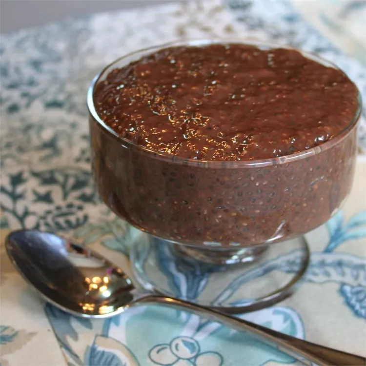

Chocolate Chia Pudding Recipe

Describtion
This deliciously simple chocolate pudding uses nutrient-dense chia seeds to make it a healthy dessert option. Chia seeds are a versatile superfood easily found in most markets today.
Ingerients
- 2 tablespoons cocoa powder
- 2 tablespoons brown sugar
- 1 teaspoon hazelnut flavor instant coffee powder (Optional)
- ¼ cup chia seeds
- 1 cup milk
- 2 teaspoons honey, or to taste
Steps
- Mix cocoa powder, brown sugar, and instant coffee powder together in a bowl. Stir until no lumps remain.
- Fold chia seeds into mixture. Add milk and stir to incorporate. Let mixture sit a few minutes before stirring again. Repeat resting and stirring for about 20 minutes.
- Cover the bowl with plastic wrap and refrigerate 2 hours to overnight.
- Drizzle honey over the pudding to serve.
Return to homepage